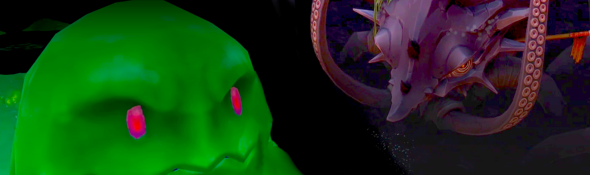
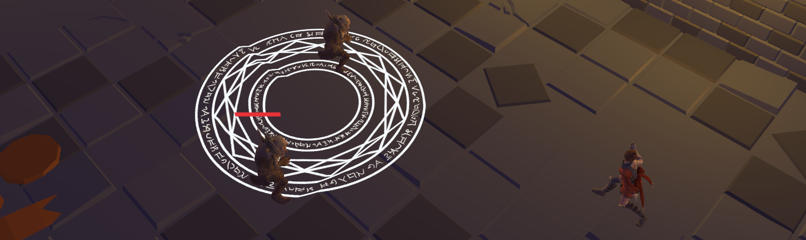
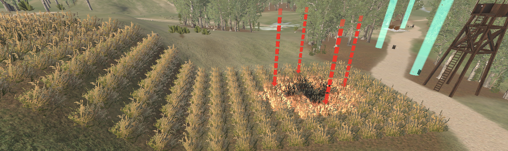
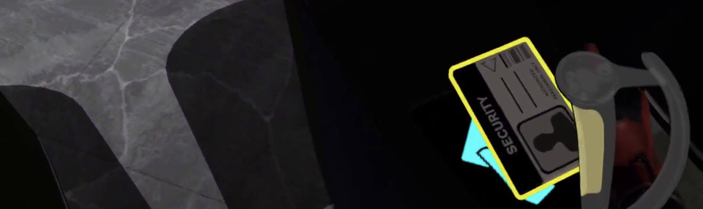
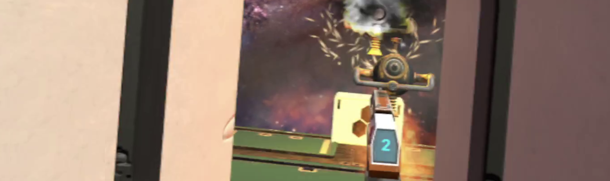

Steve Wheeler
Game Designer & Programmer
Welcome
Hi, I'm Steve - a gameplay designer and programmer currently producing quests and other content for the MMORPG Brighter Shores, working at Fen Research. You can find more of my work on my GitHub or learn more about me and my background here.
I'd love to network with fellow game enthusiasts and professionals. Please feel free to reach out via e-mail or on social media (links above).
Featured Work

Brighter Shores
Gameplay programmer and designer on a live MMORPG, leading quest design, boss encounters, seasonal events, and systemic content.
Shipped Work
Lead developer of the following major pieces of content:
- The Maintenance Crew, a quest with the game's first real-time puzzles, and introduced a large-scale boss encounter with unique mechanics.
- Filtration Station, the game's first large-scale real-time minigame, featuring eight different game modes and four difficulty levels.
- 2026 Easter event, a seasonal quest involving real-time mechanics spanning multiple locations.
Programmer and designer for the MMORPG Brighter Shores at Fen Research, working alongside the original creators of RuneScape.
Shipped Work and Key Contributions
- Easter 2026 Event: Lead Developer. A seasonal scavenger hunt quest about tracking down runaway rabbits.
- Responsible for the quest's story, theme and objectives.
- Responsible for the mapping of the 'Rabbit Cafe' and the dialogue of its patrons.
- Design and implementation of the core gameplay mechanic: the rabbit herding and capture system.
- Balancing of 70 unique rabbit locations across the game's four major areas.
- 'The Maintenance Crew': Lead Developer. A large-scale quest featuring multiple puzzles, bosses and cutscenes.
- Narrative/character design, all quest dialogue and cutscene composition.
- Puzzle design and implementation, including real-time navigation challenges, and environmental hazards.
- Boss design and implementation, including a multi-phase boss with multiple novel mechanics.
- Filtration Station: Lead Developer. Brighter Shores' first repeatable minigame with varying rules and difficulty.
- Owned the design and implementation of the minigame from concept to release.
- Created the game's core mechanics and systems and interated upon them, resulting in eight unique game modes with progressive unlocks.
- Tuned difficulty scaling across four levels.
- Project Milestone: Helped with implementation and balance work for the wider Milestones update.
Video & Screenshots
All images below are sourced from the Brighter Shores Wiki (https://brightershoreswiki.org/), © Brighter Shores Wiki contributors, licensed under Creative Commons Attribution-NonCommercial-ShareAlike 3.0 Unported (CC BY-NC-SA 3.0). [Modifications: images have been resized and colour balanced].Side Projects
Technical projects showing low-level C++ with a focus on engine development, gameplay systems and graphics programming.

Built a full gameplay framework without Unity or Unreal, including AI, UI, rendering, and tooling.
The objective of this project was to create a vertical slice of a Baldur's Gate 3/Divinity: Original Sin 2-inspired CRPG without using a game engine, such as Unity or Unreal. Instead, I built the engine on top of the low-level 'raylib' library in C++, primarily using raylib for window management and rendering. The goal was to learn how to build systems and tools from scratch, which I take for granted when using large-scale game engines, such as pathfinding, particle systems, visual effects, or serialisation.
In this demo, the player awakens in a cave and must navigate through a goblin cult that has occupied an underground dungeon. The player must repair a lever that opens their escape route through a series of quest chains to leave the dungeon area. Due to this, the demo was dubbed 'LeverQuest.'
Standout Systems
- Dialogue and quest system with custom markup language and parser for quest logic and conditionals.
- Custom UI Library imitating HTML table layout logic, including the ability to drag and drop icons contextually.
- Multi-unit A*/BFS Pathfinding system with navigation resolution.
Additional systems include billboarded particles, JSON/Binary serialisation, lighting, equippable inventory items, and a Blender-to-engine asset pipeline.
Video & Screenshots

Implemented a full fixed-function rendering pipeline from scratch, including rasterization, Z-buffering, shading, model loading, and texture filtering.
A software renderer written from scratch using C++ and SDL. Creating a 3D software renderer has been a challenge I have wanted to tackle since I first started developing video games. But, it also presented an ideal opportunity to learn more about the fundamentals of 3D renderering while improving my 3D maths and C++ skills. A complete "fixed-function" rendering pipeline was implemented, and a maths library and OBJ/MTL parser were written to support it. The project has three scenes showcasing shaded and textured environments with a GUI to select between scenes, shading method, and texture filtering.
Low-level Graphics & Maths
- Custom vector/matrix maths libraries:
slibandsmath. - Model/material loading via
ObjParserforobjandmtlfiles. - Full rendering pipeline through
Rendererand triangle rasterization throughRasterizer.
Additional support includes flat/Gouraud shading, nearest-neighbour and bilinear texture filtering, directional lighting, texture atlases, scene controls, and multithreaded processing.
Video & Screenshots


Research & Experimental Projects
Research-driven projects exploring VR training, simulation, and interaction design.


As part of my PhD, working with industry experts and stakeholders, I designed and developed a custom virtual reality learning environment over a year and a half. I used this environment in two user studies, with over 50 participants, including professional firefighters.
Features
- In-depth design developed using a framework to synergise learner's preferences and VR's features with task and environment design.
- Fire propagation based on wind speed, wind direction, moisture level of fuel, and slope inclination.
- Scripted live demonstrations of fire behaviour.
- Interactive lessons that allow the user to experiment with different simulations.
- Randomised quizzes to encourage reflection and reinforcement.
- In-depth tutorial that covers the environment's controls and tasks.
Video & Screenshots


This project was created as part of a research project with the University of Kent. The purpose of the VR environment is to teach new security guards the basics of a typical patrol. The environment was designed to test the user's situational awareness and understanding of correct procedure.
The training environment was created using Unity and the SteamVR SDK.
Due to nature of the research project, the source code is not available for this project.
Features
- Individual persistent user profiles and statistics.
- Multiple individual randomised hazards.
- Task management system in which users must complete multiple tasks to complete an object.
- In-game voice recording and playback.
- Instructors can record trainee interaction with simulation as a video file and later review.
- Statistics saved as CSV file for instructors to review later.
- Tutorial system with Text-to-Speech voice.
- Inventory system in which users can add and remove virtual objects from the world around them.
Video & Screenshots


Prop-oriented World Rotation (POWR) is an experimental technique to enable games to map objects from the user's physical environment to objects in the virtual world. For example, the user's bed in their room reinforces a crate in the virtual world. This allows the users to benefit from haptic feedback from the virtual world without needing any bespoke prop or device.
A game was developed to demonstrate this technique. The game is a shooter (similar to Time Crisis) where you shoot all the robots to advance to the next checkpoint. Each checkpoint has a virtual object the player uses for cover, scaled and mapped to a physical object in the user's room. The crate object is mapped to the bed, and any door object in the game is mapped to the room door.
This project won the award for best poster/demo at the "VRST 2021" conference as voted for by conference participants.
Features
- Implementation of "POWR" in a demonstration game.
- A variety of enemies and obstacles with their own logic.
- Wave-based shooting mechanics.
Video & Screenshots
Other Projects & Game Jams
Smaller supporting projects and jam work.

{kind=link}
{kind=link}
{kind=link}
{kind=link}
{kind=link}
{kind=link}
{kind=link}
{kind=link}
{kind=link}
{kind=link}
{kind=link}
{kind=link}
{kind=link}
{kind=link}
{kind=link}
{kind=link}
{kind=link}
A game jam entry submitted to "8 Bits to Infinity #36 - Mouse Jam 2," with the theme of creating a game that was only controlled by the mouse. I chose to recreate my days of playing old flash games by creating a mouse-controlled maze game with a variety of different enemies with different behaviours. Feedback was positive from the community and the entry was played by a Japanese streamer, which is available to watch below.
{kind=link}
{kind=link}
{kind=link}